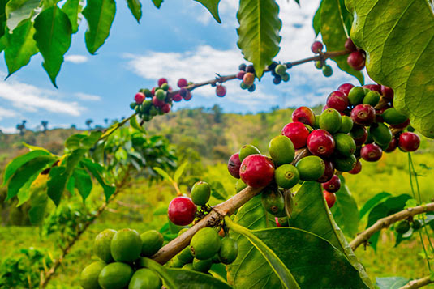
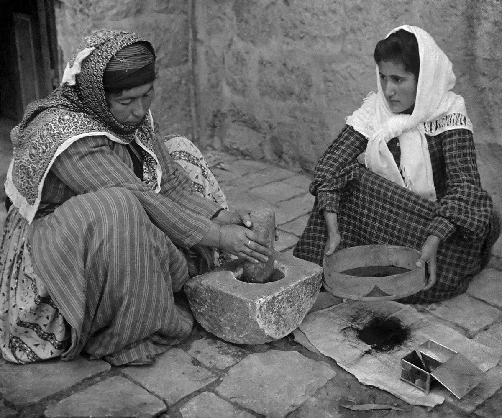
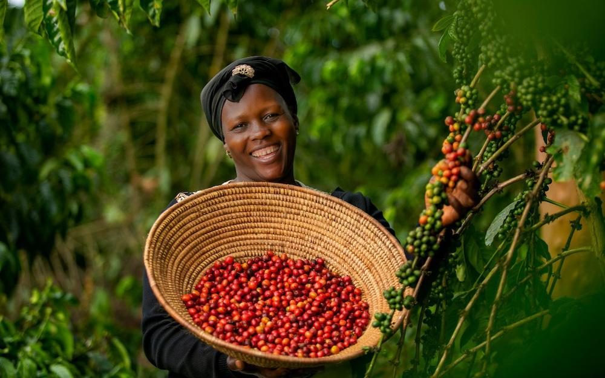
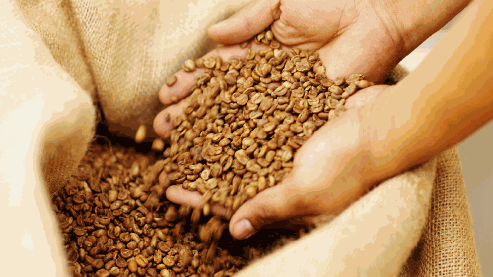
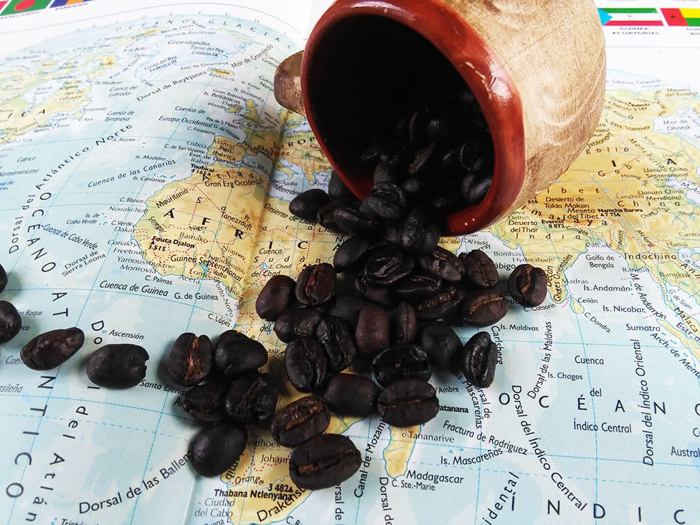

El árbol del café procede del norte de Etiopía (antes llamada
Abisinia), en el oriente de África. El cafeto es probablemente
originario de la provincia de Kaffa, en Etiopía, pero la cuestión no
está resuelta completamente. Crece en los bosques altos del suroeste
de Etiopía, de 1300 a 2000 metros de altitud. El cafeto es un arbusto
de 10 a 12 metros que crece espontáneamente.

Una leyenda muy difundida sobre el origen del café es la de un pastor
de Abisinia, llamado Kaldi, que observó el efecto tonificante que unos
pequeños frutos rojos de unos arbustos habían tenido sobre las cabras
que los habían consumido, efecto comprobado por él mismo al renovarse
sus energías. Kaldi llevó unas muestras de hojas y de frutos a un
monasterio, donde los monjes probaron el brebaje preparado a base de
los frutos, para evitar quedarse dormidos en los oficios nocturnos.
Otra teoría atribuye a los ancestros de los oromo ser los primeros en
reconocer el efecto energizante del café: habrían mezclado con grasa
sus granos molidos y formado bolitas para usarlas como raciones en
expediciones guerreras.

Aunque la distribución de los cafetos en África sugiere que la planta
crecía en forma silvestre o en cultivos a lo largo del continente
desde la Antigüedad, no hay pruebas directas que permitan ubicar estos
primeros cultivos ni saber qué tribus lo usaban como estimulante.

Los datos arqueológicos disponibles hoy en día no permiten afirmar si
el uso o conocimiento del café es anterior al siglo XV el proceso de
elaboración de la bebida, largo y complejo, explica quizás el
descubrimiento tardío de las virtudes de las semillas del cafeto, poco
atractivas inicialmente

La primera fuente que hace clara mención al uso del café fue escrita
por Abd Al-Qadir al-Jaziri. Dicha primera referencia narra que el café
habría sido llevado desde Etiopía a Yemen, a mediados del siglo XV
aproximadamente, donde los sufíes lo usaban para permanecer despiertos
durante sus oraciones, y posteriormente se extendió a Arabia, donde se
le llamó qahwa, que significa vigorizante.
